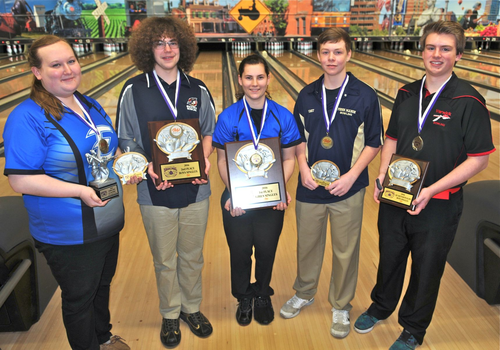

Thoughout my years in highschool I had a lot of little hobbies that I would do here and their depending on how I was feeling for the day. But I had two hobbies that i loved more than all of the others combined. The first of the two hobbies was playing videogames. You might think, "oh he just played on his free time." but I didn't. I used to go to different Call of Duty tournaments around Lancaster on weekends and play for money. This was extremely cool because I got to feel like i was actually good at something when I actually wasn't. The most i ever won through a tournament was around 100$ which isn't that bad but you get the point. My second hobby that took up all the extra time I had was bowling. Throughout high school I bowled finally becoming the captian during my senior year or high school. This might sound cool and all but it was a lot to hold knowing that everyone saw me as the face of the bowling team. I wish i could've gone to college for bowling but sadly we didn't and still don't that kind of money for something like that.
The image above shoes one of the best moments I have had in my life thoughout high school. He i recieved a plack for placing second out of every young bowler throughout Pennsylvania. I ended up going to states and completly messing around and finishing in 10th but I made a lot of new friends and had a lot of fun.